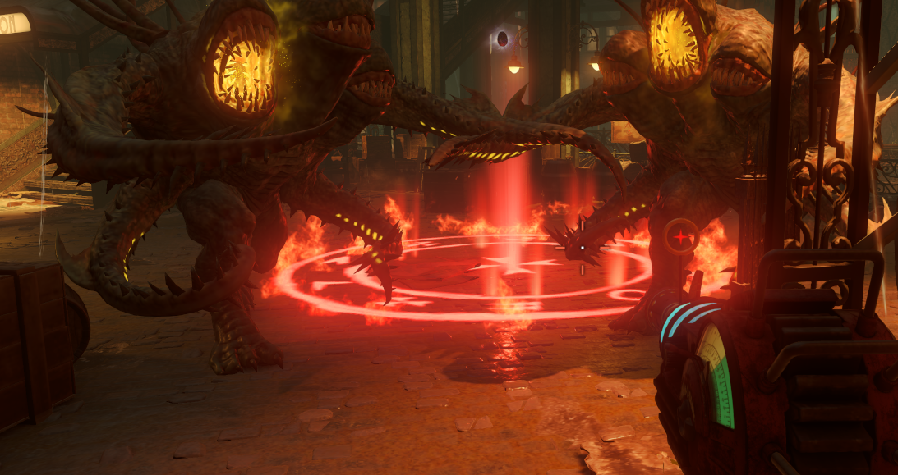
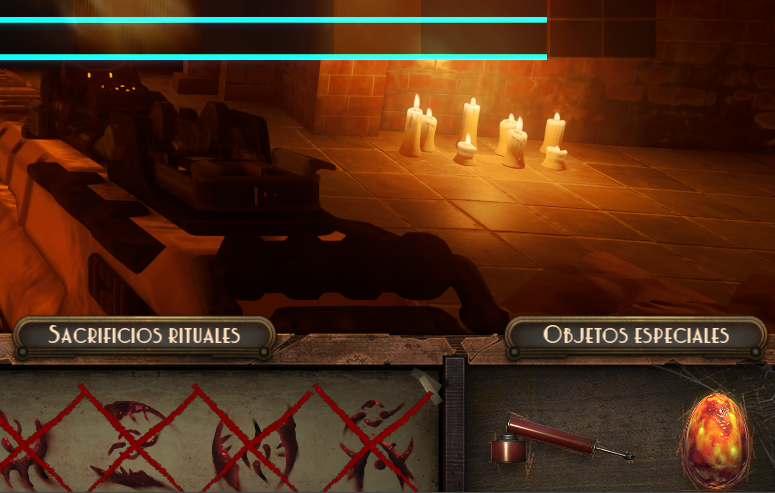

Aceptar el huevo en el ritual de nuestro personaje Tendremos que ir al ritual de nuestro personaje y un Guardián nos dará un huevo rojo.
- Ritual del mago en el Spawn
- Ritual del detective en Canals
- Ritual del luchador en Waterfront
- Ritual de la bailarina en Footlight

Círculos rojos en las tres zonas del mapa y en el centro se podran activar y margwas aparecerán. Tendremos que matarlos y si fallamos volver a invocarlos. Solo se podrá hacer un círculo por ronda.

Completados los 4 círculos volveremos a la zona de nuestro ritual y nos darán la espada..